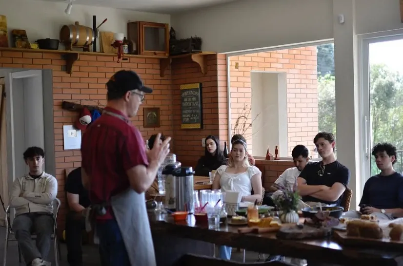

Graduação · Faculdade Nine
Curso superior de [nome a confirmar]
Uma formação em gestão em 4 semestres, com 30 disciplinas e 2 projetos integradores, para quem quer liderar com propósito.

Ficha do curso
- Denominação
- [A CONFIRMAR]
- Grau
- [A CONFIRMAR]
- Modalidade
- [A CONFIRMAR]
- Duração
- 4 semestres
- Disciplinas
- 30, sendo 2 projetos integradores
- Carga horária total
- [A CONFIRMAR]
- Turno e vagas
- [A CONFIRMAR]
- Ato autorizativo
- [A CONFIRMAR]
- Coordenação do curso
- [A CONFIRMAR]
O que você vai aprender a fazer
- Planejar e gerenciar os processos organizacionais e os sistemas da organização.
- Analisar e avaliar o ambiente interno e externo.
- Planejar e gerenciar os processos organizacionais de informação.
- Planejar e gerenciar os processos organizacionais de pessoas.
- Planejar e gerenciar os processos organizacionais de marketing.
- Promover a gestão e governança por processos e dos sistemas.
- Planejar e gerenciar os processos organizacionais financeiros.
- Formular objetivos e estratégias gerenciais.
- Planejar e gerenciar os processos organizacionais operacionais e logísticos.
Eixos formativos
- 9 Fundamentos da Gestão
- 7 Ferramentas
- 5 Habilidades de Liderança
- 5 Habilidades de Análise
- 2 Projeto Integrador
- 2 Qualidade e Conformidade
Matriz curricular
Matriz curricular
Última atualização: 02/11/2026. A carga horária por disciplina será publicada com o Projeto Pedagógico do Curso (PPC).
1º semestre 6 disciplinas
| Código | Disciplina | Eixo formativo | Área | Carga horária |
|---|---|---|---|---|
| FE191 | Lógica de Programação e Pensamento Computacional | Ferramentas | Software Informática | [A CONFIRMAR] |
| FE181 | Matemática Aplicada | Ferramentas | Matemática | [A CONFIRMAR] |
| GE151 | Gestão e Estratégia Empresarial | Fundamentos da Gestão | Economia e Negócios | [A CONFIRMAR] |
| GE142 | Comunicação Estratégica e Escrita Profissional | Fundamentos da Gestão | Pesquisa | [A CONFIRMAR] |
| LI141 | Gestão de processos de recursos humanos | Habilidades de Liderança | Pessoas, liderança e gestão | [A CONFIRMAR] |
| LI142 | Teologia com Ênfase Social | Habilidades de Liderança | Teologia | [A CONFIRMAR] |
2º semestre 8 disciplinas
| Código | Disciplina | Eixo formativo | Área | Carga horária |
|---|---|---|---|---|
| GE291 | Gestão de Marketing | Fundamentos da Gestão | Economia e Negócios | [A CONFIRMAR] |
| FE241 | Cálculo I | Ferramentas | Matemática | [A CONFIRMAR] |
| GE241 | Economia para Tomada de Decisão Estratégica | Fundamentos da Gestão | Economia e Negócios | [A CONFIRMAR] |
| AN241 | Modelagem e Análise de Processos Empresariais | Habilidades de Análise | Processos e Projetos | [A CONFIRMAR] |
| LI241 | Teologia na Prática Contemporânea | Habilidades de Liderança | Teologia | [A CONFIRMAR] |
| FE232 | Introdução à Pesquisa Científica | Ferramentas | Pesquisa | [A CONFIRMAR] |
| GE222 | Contabilidade Gerencial e Tomada de Decisão | Fundamentos da Gestão | Economia e Negócios | [A CONFIRMAR] |
| GE221 | Direito para Gestores e Empreendedores | Fundamentos da Gestão | Economia e Negócios | [A CONFIRMAR] |
3º semestre 8 disciplinas
| Código | Disciplina | Eixo formativo | Área | Carga horária |
|---|---|---|---|---|
| PI3111 | Projeto Integrador I | Projeto Integrador | Projeto Integrador I | [A CONFIRMAR] |
| LI391 | Gestão de Projetos | Habilidades de Liderança | Estratégias Gerenciais | [A CONFIRMAR] |
| AN342 | Gestão Avançada de Processos e Inovação Organizacional | Habilidades de Análise | Processos e Projetos | [A CONFIRMAR] |
| QA341 | Gestão Sustentável de Recursos e Produtividade | Qualidade e Conformidade | Sustentabilidade e sociedade | [A CONFIRMAR] |
| GE341 | Inovação e Empreendedorismo | Fundamentos da Gestão | Processos e Projetos | [A CONFIRMAR] |
| FE341 | Introdução à Estatística | Ferramentas | Matemática | [A CONFIRMAR] |
| AN341 | Pesquisa Operacional | Habilidades de Análise | Estratégias Gerenciais | [A CONFIRMAR] |
| FE342 | Tecnologias Digitais para Gestão | Ferramentas | Software Informática | [A CONFIRMAR] |
4º semestre 8 disciplinas
| Código | Disciplina | Eixo formativo | Área | Carga horária |
|---|---|---|---|---|
| PI4111 | Projeto Integrador II | Projeto Integrador | Projeto Integrador II | [A CONFIRMAR] |
| GE491 | Logística e Cadeia de Suprimentos Inteligente (Supply Chain) | Fundamentos da Gestão | Processos e Projetos | [A CONFIRMAR] |
| AN442 | Criação e análise de indicadores de desempenho gerencial | Habilidades de Análise | Processos e Projetos | [A CONFIRMAR] |
| QA441 | Gestão da Qualidade e Certificações | Qualidade e Conformidade | Processos e Projetos | [A CONFIRMAR] |
| AN441 | Gestão de Sistemas de Informação e Analytics | Habilidades de Análise | Software Informática | [A CONFIRMAR] |
| GE441 | Gestão Financeira de Empresas e Projetos | Fundamentos da Gestão | Economia e Negócios | [A CONFIRMAR] |
| FE441 | Inteligência Artificial Aplicada aos Negócios | Ferramentas | Software Informática | [A CONFIRMAR] |
| LI441 | Liderança e Gestão 4.0 | Habilidades de Liderança | Pessoas, liderança e gestão | [A CONFIRMAR] |
Forma de ingresso
O ingresso é por processo seletivo, com regras publicadas em edital.
Edital, datas, documentos exigidos e número de vagas: [A CONFIRMAR]
O Projeto Pedagógico do Curso (PPC) e os atos regulatórios ficam disponíveis em Transparência Institucional.